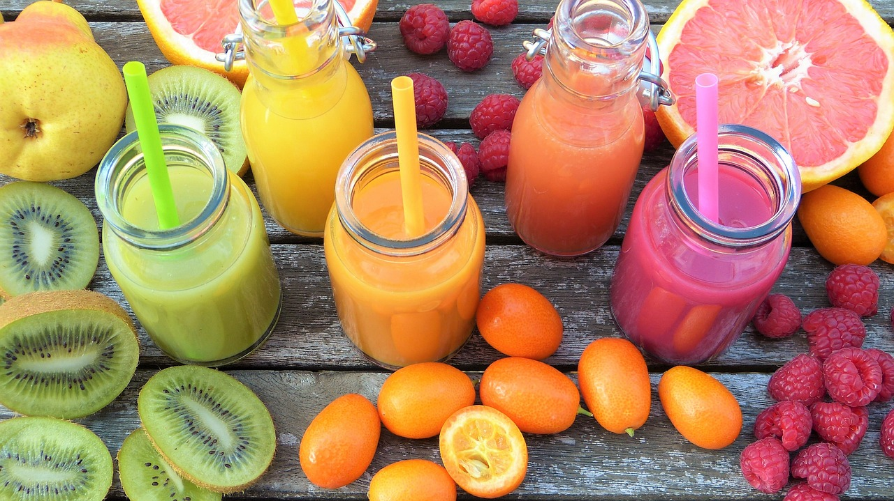

A smoothie is a beverage made by puréeing ingredients in a blender. A smoothie commonly has a liquid base, such as fruit juice or milk, yogurt, ice cream or cottage cheese. Other ingredients may be added, including fruits, vegetables, non-dairy milk, crushed ice, whey powder or nutritional supplements.
 Vanilla smoothie Strawberry smoothie Cucumber smoothie